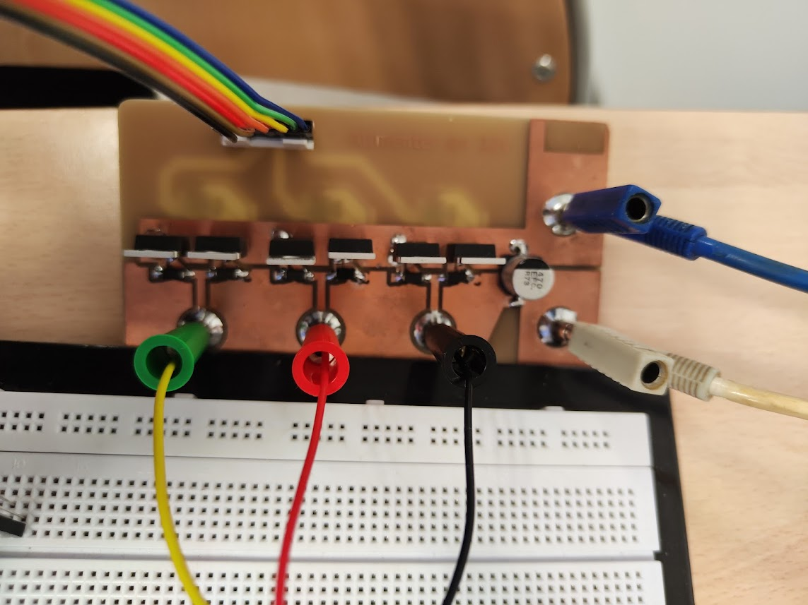

Collection — Deuxieme annee ESE
BUT2 — robotique, FPGA et drone
Deuxieme annee orientee vers des projets complets : voiture autonome LiDAR (2e place au concours de Cachan), carte IR pour robot eviteur, commande FPGA d'un moteur brushless, et premier stage au LIST3N autour de la detection de victimes par drone.
Vehicule autonome LiDAR — 2e place au concours de Cachan

Le defi consistait a concevoir et programmer la partie logicielle d'un vehicule capable de suivre un circuit en simulation puis d'evoluer en conditions reelles. Objectifs doubles : approfondir la POO en C++/Qt avec des notions reseaux TCP/IP, et mettre en oeuvre un LiDAR 360° pour une perception et navigation autonomes.
Le travail mene nous a permis de decrocher la 2e place parmi les IUT en competition. Ce podium souligne la solidite de la solution technique et la capacite de l'equipe a la faire performer en conditions reelles.
Algorithme de centrage LiDAR
Pour chaque angle θ ∈ [−90°, +90°], on calcule valeur = distance × sin(θ) ; la somme Σ(valeur) fournit un ecart lateral global :
- Σ ≈ 0 → vehicule centre
- Σ > 0 / < 0 → corrections gauche/droite
La meme somme, interpretee comme indicateur de proximite murale, ajuste dynamiquement la vitesse.
Architecture
- CapteurLiDAR 360° — 360 mesures d'angle
- ActionneursPWM moteurs gauche/droite
- Comm.Socket TCP — serveur embarque ↔ client Qt
- InterfaceStart/Stop, cartographie LiDAR temps reel
- Resultats2e place parmi les IUT — concours Cachan
Robot eviteur d'obstacle — carte receptrice infrarouge

Ma mission : realiser la carte receptrice infrarouge (IR) et developper la fonction logicielle associee. Cette carte convertit la lumiere IR reflechie par une balise en une mesure numerique transmise au microcontroleur principal par I²C. Elle constitue l'un des «yeux» du robot et conditionne sa capacite a se diriger.
Chaine de traitement IR
- Photodiode SFH 2500Capte la lumiere IR reflechie — compatible LED emettrice du robot
- Ampli transimpedance ±9 VConvertit le courant µA en tension exploitable — gain regle par essais
- Filtre passe-bande actifCentre 38 kHz — elimine la lumiere ambiante, ne laisse que la frequence de modulation
- Detecteur de crete (Schottky + RC)Transforme le signal alternatif en tension continue proportionnelle a la distance
- MCP3221 via I²CConversion numerique et envoi au microcontroleur principal
Commande FPGA d'un moteur brushless





Mon binome et moi avons realise la commande complete d'un moteur brushless a l'aide d'un FPGA DE10-Lite. Ma contribution : conception des blocs PWM en VHDL, mise au point d'un regulateur de vitesse qui compense instantanement une surcharge (resistance ajoutee au moteur), et interface utilisateur sur les six afficheurs 7 segments et la barre de 10 LEDs.
La video du test montre la boucle de controle fermee : quand on freine le rotor avec le doigt, le duty-cycle grimpe aussitot et la vitesse revient a la consigne. Quand on retire le doigt, le regulateur diminue le PWM pour retrouver le regime initial.
Points techniques cles
- Generation PWM 10 bitsCompteur modulo 1024 a 50 MHz — resolution duty-cycle 0,1 % → pilotage precis du couple
- Evolution auto duty-cycleTable ROM 128 mots — mode «rampe» (triangle) ou «sinus» pour reduire le bruit de commutation
- Boucle «anti-charge»Mesure de vitesse a 1 kHz ; correcteur proportionnel : duty += Kp × (consigne − vitesse)
- Interface utilisateur6 afficheurs 7 segments + barre 10 LEDs pour vitesse et pourcentage PWM en direct
Detection de victimes par drone — projet ARODE


Stage realise au LIST3N (Universite de Reims) dans le cadre du projet ARODE (Autonomous Rescue Drones), visant la detection de victimes via drones pour les equipes de secours lors de catastrophes (incendies, effondrements, zones inaccessibles).
Chronologie
- S1Exploration Parrot ANAFI, tests de latence
- S2–S3Migration vers DJI Mavic 2 Pro
- S4Prototype IA embarquee
- S5–S6Passage Mavic 3 Enterprise + routeur Wi-Fi
- S7–S8Synchro video/GPS et demo finale
Realisations techniques
- Live Stream ≤ 1 s — video HD diffusee en quasi temps reel
- Megaphone embarque — diffusion de messages vocaux depuis le drone
- Synchro video + GPS — alignement precis des timestamps et coordonnees
- Interface Android — application de controle dediee